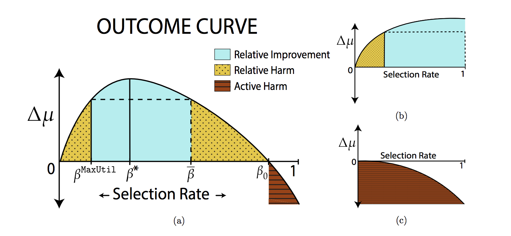

- 000 开篇词 你的360度人工智能信息助理.md
- 001 聊聊2017年KDD大会的时间检验奖.md
- 002 精读2017年KDD最佳研究论文.md
- 003 精读2017年KDD最佳应用数据科学论文.md
- 004 精读2017年EMNLP最佳长论文之一.md
- 005 精读2017年EMNLP最佳长论文之二.md
- 006 精读2017年EMNLP最佳短论文.md
- 007 精读2017年ICCV最佳研究论文.md
- 008 精读2017年ICCV最佳学生论文.md
- 009 如何将深度强化学习应用到视觉问答系统？.md
- 010 精读2017年NIPS最佳研究论文之一：如何解决非凸优化问题？.md
- 011 精读2017年NIPS最佳研究论文之二：KSD测试如何检验两个分布的异同？.md
- 012 精读2017年NIPS最佳研究论文之三：如何解决非完美信息博弈问题？.md
- 013 WSDM 2018论文精读：看谷歌团队如何做位置偏差估计.md
- 014 WSDM 2018论文精读：看京东团队如何挖掘商品的替代信息和互补信息.md
- 015 WSDM 2018论文精读：深度学习模型中如何使用上下文信息？.md
- 016 The Web 2018论文精读：如何对商品的图片美感进行建模？.md
- 017 The Web 2018论文精读：如何改进经典的推荐算法BPR？.md
- 018 The Web 2018论文精读：如何从文本中提取高元关系？.md
- 019 SIGIR 2018论文精读：偏差和流行度之间的关系.md
- 020 SIGIR 2018论文精读：如何利用对抗学习来增强排序模型的普适性？.md
- 021 SIGIR 2018论文精读：如何对搜索页面上的点击行为进行序列建模？.md
- 022 CVPR 2018论文精读：如何研究计算机视觉任务之间的关系？.md
- 023 CVPR 2018论文精读：如何从整体上对人体进行三维建模？.md
- 024 CVPR 2018论文精读：如何解决排序学习计算复杂度高这个问题？.md
- 025 ICML 2018论文精读：模型经得起对抗样本的攻击？这或许只是个错觉.md
- 026 ICML 2018论文精读：聊一聊机器学习算法的公平性问题.md
- 027 ICML 2018论文精读：优化目标函数的时候，有可能放大了不公平？.md
- 028 ACL 2018论文精读：问答系统场景下，如何提出好问题？.md
- 029 ACL 2018论文精读：什么是对话中的前提触发？如何检测？.md
- 030 ACL 2018论文精读：什么是端到端的语义哈希？.md
- 030 复盘 7 一起来读人工智能国际顶级会议论文.md
- 031 经典搜索核心算法：TF-IDF及其变种.md
- 032 经典搜索核心算法：BM25及其变种（内附全年目录）.md
- 033 经典搜索核心算法：语言模型及其变种.md
- 034 机器学习排序算法：单点法排序学习.md
- 035 机器学习排序算法：配对法排序学习.md
- 036 机器学习排序算法：列表法排序学习.md
- 037 查询关键字理解三部曲之分类.md
- 038 查询关键字理解三部曲之解析.md
- 039 查询关键字理解三部曲之扩展.md
- 040 搜索系统评测，有哪些基础指标？.md
- 041 搜索系统评测，有哪些高级指标？.md
- 042 如何评测搜索系统的在线表现？.md
- 043 文档理解第一步：文档分类.md
- 044 文档理解的关键步骤：文档聚类.md
- 045 文档理解的重要特例：多模文档建模.md
- 046 大型搜索框架宏观视角：发展、特点及趋势.md
- 047 多轮打分系统概述.md
- 048 搜索索引及其相关技术概述.md
- 049 PageRank算法的核心思想是什么？.md
- 050 经典图算法之HITS.md
- 052 机器学习排序算法经典模型：RankSVM.md
- 053 机器学习排序算法经典模型：GBDT.md
- 054 机器学习排序算法经典模型：LambdaMART.md
- 055 基于深度学习的搜索算法：深度结构化语义模型.md
- 056 基于深度学习的搜索算法：卷积结构下的隐含语义模型.md
- 057 基于深度学习的搜索算法：局部和分布表征下的搜索模型.md
- 057 复盘 1 搜索核心技术模块.md
- 058 简单推荐模型之一：基于流行度的推荐模型.md
- 059 简单推荐模型之二：基于相似信息的推荐模型.md
- 060 简单推荐模型之三：基于内容信息的推荐模型.md
- 061 基于隐变量的模型之一：矩阵分解.md
- 062 基于隐变量的模型之二：基于回归的矩阵分解.md
- 063 基于隐变量的模型之三：分解机.md
- 064 高级推荐模型之一：张量分解模型.md
- 065 高级推荐模型之二：协同矩阵分解.md
- 066 高级推荐模型之三：优化复杂目标函数.md
- 067 推荐的Exploit和Explore算法之一：EE算法综述.md
- 068 推荐的Exploit和Explore算法之二：UCB算法.md
- 069 推荐的Exploit和Explore算法之三：汤普森采样算法.md
- 070 推荐系统评测之一：传统线下评测.md
- 071 推荐系统评测之二：线上评测.md
- 072 推荐系统评测之三：无偏差估计.md
- 073 现代推荐架构剖析之一：基于线下离线计算的推荐架构.md
- 074 现代推荐架构剖析之二：基于多层搜索架构的推荐系统.md
- 075 现代推荐架构剖析之三：复杂现代推荐架构漫谈.md
- 076 基于深度学习的推荐模型之一：受限波兹曼机.md
- 077 基于深度学习的推荐模型之二：基于RNN的推荐系统.md
- 078 基于深度学习的推荐模型之三：利用深度学习来扩展推荐系统.md
- 078 复盘 2 推荐系统核心技术模块.md
- 079 广告系统概述.md
- 080 广告系统架构.md
- 081 广告回馈预估综述.md
- 082 Google的点击率系统模型.md
- 083 Facebook的广告点击率预估模型.md
- 084 雅虎的广告点击率预估模型.md
- 085 LinkedIn的广告点击率预估模型.md
- 086 Twitter的广告点击率预估模型.md
- 087 阿里巴巴的广告点击率预估模型.md
- 088 什么是基于第二价位的广告竞拍？.md
- 089 广告的竞价策略是怎样的？.md
- 090 如何优化广告的竞价策略？.md
- 091 如何控制广告预算？.md
- 092 如何设置广告竞价的底价？.md
- 093 聊一聊程序化直接购买和广告期货.md
- 094 归因模型：如何来衡量广告的有效性.md
- 095 广告投放如何选择受众？如何扩展受众群？.md
- 096 复盘 4 广告系统核心技术模块.md
- 096 如何利用机器学习技术来检测广告欺诈？.md
- 097 LDA模型的前世今生.md
- 098 LDA变种模型知多少.md
- 099 针对大规模数据，如何优化LDA算法？.md
- 100 基础文本分析模型之一：隐语义分析.md
- 101 基础文本分析模型之二：概率隐语义分析.md
- 102 基础文本分析模型之三：EM算法.md
- 103 为什么需要Word2Vec算法？.md
- 104 Word2Vec算法有哪些扩展模型？.md
- 105 Word2Vec算法有哪些应用？.md
- 106 序列建模的深度学习利器：RNN基础架构.md
- 107 基于门机制的RNN架构：LSTM与GRU.md
- 108 RNN在自然语言处理中有哪些应用场景？.md
- 109 对话系统之经典的对话模型.md
- 110 任务型对话系统有哪些技术要点？.md
- 111 聊天机器人有哪些核心技术要点？.md
- 112 什么是文档情感分类？.md
- 113 如何来提取情感实体和方面呢？.md
- 114 复盘 3 自然语言处理及文本处理核心技术模块.md
- 114 文本情感分析中如何做意见总结和搜索？.md
- 115 什么是计算机视觉？.md
- 116 掌握计算机视觉任务的基础模型和操作.md
- 117 计算机视觉中的特征提取难在哪里？.md
- 118 基于深度学习的计算机视觉技术（一）：深度神经网络入门.md
- 119 基于深度学习的计算机视觉技术（二）：基本的深度学习模型.md
- 120 基于深度学习的计算机视觉技术（三）：深度学习模型的优化.md
- 121 计算机视觉领域的深度学习模型（一）：AlexNet.md
- 122 计算机视觉领域的深度学习模型（二）：VGG & GoogleNet.md
- 123 计算机视觉领域的深度学习模型（三）：ResNet.md
- 124 计算机视觉高级话题（一）：图像物体识别和分割.md
- 125 计算机视觉高级话题（二）：视觉问答.md
- 126 计算机视觉高级话题（三）：产生式模型.md
- 126复盘 5 计算机视觉核心技术模块.md
- 127 数据科学家基础能力之概率统计.md
- 128 数据科学家基础能力之机器学习.md
- 129 数据科学家基础能力之系统.md
- 130 数据科学家高阶能力之分析产品.md
- 131 数据科学家高阶能力之评估产品.md
- 132 数据科学家高阶能力之如何系统提升产品性能.md
- 133 职场话题：当数据科学家遇见产品团队.md
- 134 职场话题：数据科学家应聘要具备哪些能力？.md
- 135 职场话题：聊聊数据科学家的职场规划.md
- 136 如何组建一个数据科学团队？.md
- 137 数据科学团队养成：电话面试指南.md
- 138 数据科学团队养成：Onsite面试面面观.md
- 139 成为香饽饽的数据科学家，如何衡量他们的工作呢？.md
- 140 人工智能领域知识体系更新周期只有5～6年，数据科学家如何培养？.md
- 141 数据科学家团队组织架构：水平还是垂直，这是个问题.md
- 142 数据科学家必备套路之一：搜索套路.md
- 143 数据科学家必备套路之二：推荐套路.md
- 144 数据科学家必备套路之三：广告套路.md
- 145 如何做好人工智能项目的管理？.md
- 146 数据科学团队必备的工程流程三部曲.md
- 147 数据科学团队怎么选择产品和项目？.md
- 148 曾经辉煌的雅虎研究院.md
- 149 微软研究院：工业界研究机构的楷模.md
- 150 复盘 6 数据科学家与数据科学团队是怎么养成的？.md
- 150 聊一聊谷歌特立独行的混合型研究.md
- 151 精读AlphaGo Zero论文.md
- 152 2017人工智能技术发展盘点.md
- 153 如何快速学习国际顶级学术会议的内容？.md
- 154 在人工智能领域，如何快速找到学习的切入点？.md
- 155 人工智能技术选择，该从哪里获得灵感？.md
- 156 内参特刊 和你聊聊每个人都关心的人工智能热点话题.md
- 156 近在咫尺，走进人工智能研究.md
- 结束语 雄关漫道真如铁，而今迈步从头越.md
026 ICML 2018论文精读：聊一聊机器学习算法的公平性问题
在上一次的分享里，我们介绍了今年ICML大会的一篇最佳论文，这是一篇非常优秀的机器学习和计算机安全相结合的论文。这篇论文剖析了目前在白盒攻击的场景下，攻击方如何绕过一种叫作“混淆梯度”的情况，来实现有效攻击的目的。
今天，我们来分享ICML 2018的另一篇最佳论文，题目Delayed Impact of Fair Machine Learning。这篇论文主要探讨了“公平”（Fair）在机器学习中的应用。论文的五位作者都来自加州大学伯克利分校。
论文的背景
这篇论文所探讨的主题是机器学习的“公平性”问题。近些年，这个主题受到了学术界越来越多的关注，但是对于普通的人工智能工程师和数据科学家来说，这个议题依然显得比较陌生和遥远。所以，我先来简单梳理一下这方面研究的核心思想。
机器学习有一个重要的应用，就是在各类决策场景中提供帮助，例如申请贷款、大学入学、警察执勤等。一个不可否认的特点是，这些决策很有可能会对社会或者个人产生重大的不可逆转的后果。其中一个重要的后果就是，针对不同的人群，有可能会产生意想不到的“不公平”的境况。比如，有一些普遍使用的算法，在帮助警察判断一个人是否可能是罪犯的时候，系统会认为美国黑人相对于白人更容易犯罪，这个判断显然存在一定的问题。
机器学习研究者已经注意到了这种算法中的“公平”问题，并且开始探讨没有任何限制条件的机器学习算法，是否会对少数族裔（Underrepresented Group）产生不公平的决策判断。基于这些探索，研究者们提出了一系列的算法，对现有的各种机器学习模型增加附带了公平相关的限制条件，希望通过这种方法来解决各种不公平定义下的决策问题。
论文的主要贡献
这篇论文从理论角度展开讨论，基于什么样假设和条件下的具有公平性质的机器学习算法，在决策场景中能够真正为少数族群带来长期的福祉。值得注意的是，这里所谓的少数族裔是一个抽象化的概念，指的是数目相对较少的，或者在某种特性下比较少的一组数据群体。这篇论文并不直接讨论社会学意义下的少数族群的定义。
作者们主要是比较两个人群A和B，在不同的公平条件下，看这两组人群的某种“效用”（Utility）的差值会发生什么变化。这个差值可以是正的，没变化或者是负的。
论文的主要结论是，在不同的公平条件下，效用差值会有各种可能性。这其实是一个非常重要的结论。有一些公平条件，直觉上我们感觉会促进少数族群的效用，但这篇论文向我们展示了，即便出发点是好的，在某些情况下，效用差值也可能是负的。
除此以外，这篇论文还探讨了“测量误差”（Measurement Error）对效用差值的影响。作者们认为测量误差也应该被纳入整个体系中去思考公平的问题。
需要指出的是，论文的分析方法主要建立在时序关系的“一步预测”（One Time Epoch）基础上的。也就是说，我们利用当前的数据和模型对下一步的决策判断进行分析，并不包括对未来时间段所有的预测。从理论上说，如果在无限未来时间段的情况下，结论有可能发生变化。
论文的核心方法
这篇文章的核心思路是探讨针对人群A和B所采取的一种“策略”（Policy），是怎么样影响这两组人群的效用差别的。如果某种策略会导致某个群体的效用差别为负，那么我们就说这个策略对群体产生了“绝对损坏”（Active Harm）作用；如果效用差别是零，就说明这个策略对群体产生了“停滞”（Stagnation）作用；如果效用差别是正的，就说明这个策略对群体产生了“推动”（Improvement）作用。
除此以外，我们认为有一种不考虑人群A和B具体特征的期望最大化效用的策略，称之为“最大化效用”（MaxUtil）。这种策略其实就是在没有约束条件的情况下，利用一般的机器学习算法达到的效果。我们需要把新策略和这个策略进行比较，如果新的策略比这个策略好，就是产生了“相对推动”（Relative Improvement），反之我们说新的策略产生了“相对损害”（Relative Harm）。
为了进一步进行分析，作者们引入了一个叫“结果曲线”（Outcome Curve）的工具来视觉化策略和效用差值的关系。具体来说，曲线的横轴就是因为策略所导致的对某一个群体的选择概率，纵轴就是效用差值。当我们有了这个曲线之后，就能非常直观地看到效用差值的变化。

从这个曲线上我们可以看到，效用差值的确在一个区间内是“相对推动”的，而在另一个区间是“相对损害”的，在最右边的一个区间里是“绝对损害”的。这就打破了我们之前的看法，认为有一些选择策略会一致性地导致唯一结果。
在此基础上，我们专门来看这两种特殊的策略。第一种叫“种族公平”（Demographic Parity），思路是希望在两个人群中保持一样的选择概率。另一种策略叫“公平机会”（Equal Opportunity），思路是希望某个人群中成功的概率（例如申请到贷款、学校录取等）和人群无关。这两种策略都是典型的试图利用限制条件来达到公平的方法。我们希望来比较的就是这两种策略以及之前说的最大化效用之间的一些关系，得出以下三个主要结论。
第一个比较出乎意料的结论是最大化效用这个策略并不会导致“绝对损害”。意思就是说，和人们之前的一些想法不同，最大化效用也有可能让少数族裔的效用得到提升或者不变。
第二个结论是，这两种公平策略都可能会造成“相对推动”。这也是推出这两种策略的初衷，希望能够在选择概率上进行调整，从而让少数族裔的效用得到提升。
第三个结论是，这两种公平策略都可能会造成“相对损害”。这是本篇论文的一个重要结论，正式地证明了公平策略在某个区间上其实并没有带来正向的“推动”反而是“损害”了少数族群。作者们进一步比较了“种族公平”和“公平机会”这两个策略，发现“公平机会”可以避免“绝对损害”而“种族公平”则无法做到。
小结
今天我为你讲了今年ICML的另一篇最佳论文。
一起来回顾下要点：第一，这篇论文讨论了计算机算法的公平性问题；第二，我们详细介绍了论文提出的两种策略以及得出的主要结论。
最后，给你留一个思考题，研究算法的公平性对我们日常的应用型工作有什么启发作用？
© 2019 - 2023 Liangliang Lee. Powered by gin and hexo-theme-book.